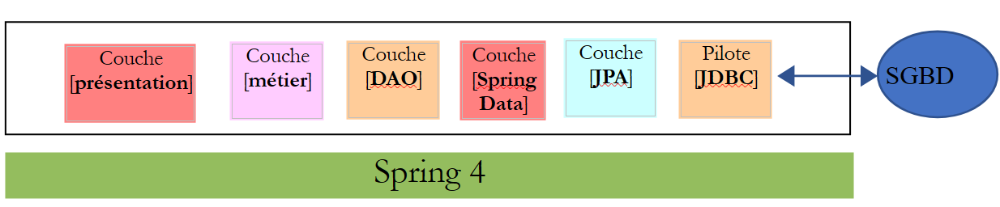
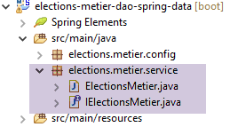
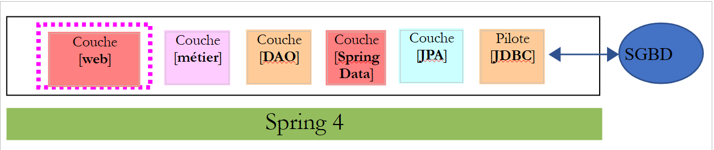
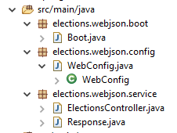
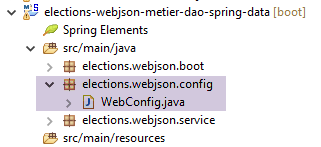
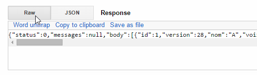
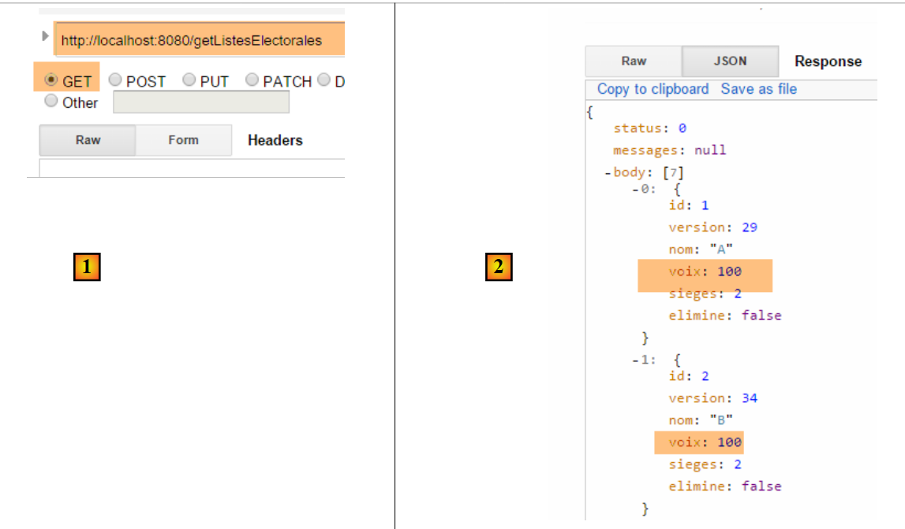

14. [TD] : Exposition sur le web de la couche [metier]
Mots clés : architecture multicouche, Spring, injection de dépendances, service web / jSON, client / serveur.
Revenons à l'architecture actuelle de l'application du TD :
 |
Nous allons faire évoluer cette architecture vers la suivante :
 |
afin d'exposer sur le web l'interface [IMetier] de la couche métier. Pour cela nous allons suivre la méthodologie décrite au paragraphe 13.5.
14.1. Support
 |
Les projets de ce chapitre seront trouvés dans le dossier [support / chap-14].
14.2. Le projet Eclipse de la couche [métier]
 |
 |
14.2.1. Configuration Maven
Le projet de la couche [métier] est un projet Maven configuré par le fichier [pom.xml] suivant :
<?xml version="1.0" encoding="UTF-8"?>
<project xmlns="http://maven.apache.org/POM/4.0.0"
xsi:schemaLocation="http://maven.apache.org/POM/4.0.0 http://maven.apache.org/maven-v4_0_0.xsd"
xmlns:xsi="http://www.w3.org/2001/XMLSchema-instance">
<modelVersion>4.0.0</modelVersion>
<groupId>istia.st.elections</groupId>
<artifactId>elections-metier-dao-spring-data</artifactId>
<version>0.1.0</version>
<!-- dépendances -->
<parent>
<groupId>org.springframework.boot</groupId>
<artifactId>spring-boot-starter-parent</artifactId>
<version>1.2.7.RELEASE</version>
</parent>
<dependencies>
<!-- couche [DAO] -->
<dependency>
<groupId>istia.st.elections</groupId>
<artifactId>elections-dao-spring-data-01</artifactId>
<version>0.0.1-SNAPSHOT</version>
</dependency>
<!-- Spring Boot -->
<dependency>
<groupId>org.springframework.boot</groupId>
<artifactId>spring-boot</artifactId>
<scope>test</scope>
</dependency>
<!-- Spring Boot Test -->
<dependency>
<groupId>org.springframework.boot</groupId>
<artifactId>spring-boot-starter-test</artifactId>
<scope>test</scope>
</dependency>
</dependencies>
<properties>
<!-- use UTF-8 for everything -->
<project.build.sourceEncoding>UTF-8</project.build.sourceEncoding>
<java.version>1.8</java.version>
</properties>
<build>
<plugins>
<plugin>
<groupId>org.apache.maven.plugins</groupId>
<artifactId>maven-surefire-plugin</artifactId>
<version>2.18.1</version>
</plugin>
</plugins>
</build>
</project>
- lignes 18-22 : la dépendance sur la couche [DAO] construite au paragraphe 12 ;
- lignes 23-34 : les dépendances nécessaires aux tests ;
14.2.2. Configuration Spring
 |
Le projet de la couche [métier] est un projet Spring configuré par le fichier [MetierConfig] suivant :
package elections.metier.config;
import org.springframework.context.annotation.ComponentScan;
import org.springframework.context.annotation.Import;
import elections.dao.config.DaoConfig;
@Import({ DaoConfig.class })
@ComponentScan({ "elections.metier.service" })
public class MetierConfig {
}
- nous n'utilisons pas ici la notation [@Configuration] qui fait de la classe une classe de configuration Spring. La présence des annotations [@Import, @ComponentScan] fait automatiquement d'elle une classe de configuration ;
- ligne 8 : on importe le fichier de configuration de la couche [DAO]. On dispose alors de tous les beans définis par ce fichier ;
- ligne 9 : d'autres beans Spring sont à chercher dans le dossier [elections.metier.service] ;
14.2.3. Implémentation de la couche [métier]
 |
L'implémentation de la couche [métier] est celle qui a été définie au paragraphe 8.5.
14.2.4. Le test de la couche [métier]
 |
La classe de test est celle décrite au paragraphe 8.6.
Travail à faire : implémentez le projet de la couche [métier] et passer son test unitaire. Générez l'archive de la couche dans le dépôt Maven local (run as/ Maven / install).
14.3. Le projet Eclipse de la couche [web]
 |
La couche web est une couche Spring MVC :
 |
Le projet Eclipse a la structure suivante :
 |  |
- [Boot.java] est la classe qui lance le service web ;
- [WebConfig.java] est la classe de configuration du service web ;
- [Response.java] est la réponse faite par les différentes URL du service web ;
- [ElectionsController] est la classe d'implémentation du service web ;
14.4. Configuration Maven
Le projet est un projet Maven configuré par le fichier [pom.xml] suivant :
<project xmlns="http://maven.apache.org/POM/4.0.0" xmlns:xsi="http://www.w3.org/2001/XMLSchema-instance"
xsi:schemaLocation="http://maven.apache.org/POM/4.0.0 http://maven.apache.org/xsd/maven-4.0.0.xsd">
<modelVersion>4.0.0</modelVersion>
<groupId>istia.st.elections</groupId>
<artifactId>elections-webjson-metier-dao-spring-data</artifactId>
<version>0.0.1-SNAPSHOT</version>
<name>elections-webjson-metier-dao-spring-data</name>
<description>couche métier exposée comme un service web / jSON</description>
<parent>
<groupId>org.springframework.boot</groupId>
<artifactId>spring-boot-starter-parent</artifactId>
<version>1.2.7.RELEASE</version>
</parent>
<dependencies>
<!-- couche métier -->
<dependency>
<groupId>istia.st.elections</groupId>
<artifactId>elections-metier-dao-spring-data</artifactId>
<version>0.1.0</version>
</dependency>
<!-- couche MVC -->
<dependency>
<groupId>org.springframework.boot</groupId>
<artifactId>spring-boot-starter-web</artifactId>
</dependency>
</dependencies>
<properties>
<project.build.sourceEncoding>UTF-8</project.build.sourceEncoding>
<java.version>1.8</java.version>
</properties>
<build>
<plugins>
<plugin>
<groupId>org.apache.maven.plugins</groupId>
<artifactId>maven-surefire-plugin</artifactId>
<version>2.18.1</version>
</plugin>
</plugins>
</build>
</project>
- lignes 19-23 : la dépendance sur l'archive la couche [métier]. C'est celle que nous avons créé au paragraphe 14 ;
- lignes 25-28 : la dépendance pour avoir une application Spring MVC ;
14.5. Configuration Spring
 |
La classe [WebConfig] configure le service web :
package elections.webjson.config;
import org.springframework.beans.factory.annotation.Autowired;
import org.springframework.beans.factory.config.ConfigurableBeanFactory;
import org.springframework.boot.context.embedded.EmbeddedServletContainerFactory;
import org.springframework.boot.context.embedded.ServletRegistrationBean;
import org.springframework.boot.context.embedded.tomcat.TomcatEmbeddedServletContainerFactory;
import org.springframework.context.ApplicationContext;
import org.springframework.context.annotation.Bean;
import org.springframework.context.annotation.ComponentScan;
import org.springframework.context.annotation.Import;
import org.springframework.context.annotation.Scope;
import org.springframework.web.context.WebApplicationContext;
import org.springframework.web.servlet.DispatcherServlet;
import org.springframework.web.servlet.config.annotation.EnableWebMvc;
import com.fasterxml.jackson.databind.ObjectMapper;
import elections.metier.config.MetierConfig;
@EnableWebMvc
@Import({ MetierConfig.class })
@ComponentScan({ "elections.webjson.service" })
public class WebConfig {
// -------------------------------- configuration couche [web]
@Autowired
private ApplicationContext context;
@Bean
public DispatcherServlet dispatcherServlet() {
DispatcherServlet servlet = new DispatcherServlet((WebApplicationContext) context);
return servlet;
}
@Bean
public ServletRegistrationBean servletRegistrationBean(DispatcherServlet dispatcherServlet) {
return new ServletRegistrationBean(dispatcherServlet, "/*");
}
@Bean
public EmbeddedServletContainerFactory embeddedServletContainerFactory() {
return new TomcatEmbeddedServletContainerFactory("", 8080);
}
// mappeur jSON
@Bean
@Scope(value = ConfigurableBeanFactory.SCOPE_PROTOTYPE)
public ObjectMapper jsonMapper() {
return new ObjectMapper();
}
}
- la signification de cette configuration a été donnée au paragraphe 13.5.3.1. Nous n'expliquons que les nouveautés :
- ligne 22 : on importe le fichier de configuration de la couche [métier] pour bénéficier de tous ses beans ;
- ligne 23 : on indique que d'autres beans seront trouvés dans le dossier [elections.webjson.server.service] ;
14.6. La classe de lancement du service web
 |
La classe [Boot] lance le service web de la façon suivante :
package elections.webjson.boot;
import org.springframework.boot.SpringApplication;
import elections.webjson.config.WebConfig;
public class Boot {
public static void main(String[] args) {
SpringApplication.run(WebConfig.class, args);
}
}
- ligne 10 : la méthode statique [SpringApplication.run] va exploiter le fichier de configuration [WebConfig]. A cause de l'annotation [@EnableAutoConfiguration], Spring Boot va lancer le serveur Tomvat et déployer le service web dessus ;
14.7. La réponse des URL du service web
 |
Toutes les URL du service web / jSON envoient le même type de réponse :
package elections.webjson.service;
import java.util.List;
public class Response<T> {
// ----------------- propriétés
// statut de l'opération
private int status;
// les éventuels messages d'erreur
private List<String> messages;
// le corps de la réponse
private T body;
// constructeurs
public Response() {
}
public Response(int status, List<String> messages, T body) {
this.status = status;
this.messages = messages;
this.body = body;
}
// getters et setters
...
}
Cette classe a été présentée et étudiée au paragraphe 13.5.5.3.
14.8. L'implémentation du service web / jSON
|
Le service web / jSON est implémenté par la classe [ElectionsController] suivante :
package elections.webjson.service;
import java.util.ArrayList;
import java.util.List;
import javax.servlet.http.HttpServletRequest;
import org.springframework.beans.factory.annotation.Autowired;
import org.springframework.stereotype.Controller;
import org.springframework.web.bind.annotation.RequestMapping;
import org.springframework.web.bind.annotation.RequestMethod;
import org.springframework.web.bind.annotation.ResponseBody;
import com.fasterxml.jackson.core.JsonProcessingException;
import com.fasterxml.jackson.databind.ObjectMapper;
import elections.dao.entities.ElectionsConfig;
import elections.dao.entities.ElectionsException;
import elections.metier.service.IElectionsMetier;
@Controller
public class ElectionsController {
// dépendances Spring
@Autowired
private ObjectMapper jsonMapper;
@Autowired
private IElectionsMetier metier;
@RequestMapping(value = "/getElectionsConfig", method = RequestMethod.GET, produces = "application/json; charset=UTF-8")
@ResponseBody
public String getElectionsConfig() throws JsonProcessingException {
// réponse
Response<ElectionsConfig> response;
try {
response = new Response<>(0, null,
new ElectionsConfig(metier.getNbSiegesAPourvoir(), metier.getSeuilElectoral()));
} catch (ElectionsException e1) {
response = new Response<>(e1.getCode(), e1.getErreurs(), null);
} catch (RuntimeException e2) {
response = new Response<>(1000, getErreursForException(e2), null);
}
// réponse
return jsonMapper.writeValueAsString(response);
}
@RequestMapping(value = "/getListesElectorales", method = RequestMethod.GET, produces = "application/json; charset=UTF-8")
@ResponseBody
public String getListesElectorales() throws JsonProcessingException {
throw new UnsupportedOperationException("Not supported yet");
}
@RequestMapping(value = "/setListesElectorales", method = RequestMethod.POST, consumes = "application/json; charset=UTF-8", produces = "application/json; charset=UTF-8")
@ResponseBody
public String setListesElectorales(HttpServletRequest request) throws JsonProcessingException {
throw new UnsupportedOperationException("Not supported yet");
}
@RequestMapping(value = "/calculerSieges", method = RequestMethod.POST, consumes = "application/json; charset=UTF-8", produces = "application/json; charset=UTF-8")
@ResponseBody
public String calculerSieges(HttpServletRequest request) throws JsonProcessingException {
throw new UnsupportedOperationException("Not supported yet");
}
// méthodes privées -----------------------------
// liste des messages d'erreur d'une RuntimeException
private List<String> getErreursForException(Exception e) {
// on récupère la liste des messages d'erreur de l'exception
Throwable cause = e;
List<String> erreurs = new ArrayList<>();
while (cause != null) {
// on récupère le message seulement s'il est !=null et non blanc
String message = cause.getMessage();
if (message != null) {
message = message.trim();
if (message.length() != 0) {
erreurs.add(message);
}
}
// cause suivante
cause = cause.getCause();
}
return erreurs;
}
}
Travail à faire : en suivant ce qui a été fait au paragraphe 13.5.5, complétez le code de la classe [ElectionsController].
Notes :
- il n'y a pas ici de filtres jSON car les tables [CONF] et [LISTES] ne sont pas liées entre-elles par une relation de clé étrangère, ce qui allège considérablement le code du service web ;
- ne pas oublier les différentes annotations Spring nécessaires ;
- on donnera aux URL le nom des méthodes associées ;
- la méthode [setListeElectorales] est appelée avec une opération [POST]. La valeur postée est le tableau des listes en compétition (de type ListeElectorale[]) avec leurs attributs [sieges, voix, elimine] qu'il faut enregistrer en base. Cette méthode rend un type [Response<Void>] avec un champ [status=0] s'il n'y a pas eu d'erreur, autre chose sinon ;
- la méthode [calculerSieges] est appelée avec une opération [POST]. La valeur postée est le tableau des listes en compétition (de type ListeElectorale[]) avec leurs attributs [nom, voix]. Cette méthode rend un type [Response<ListeElectorale[]>] avec comme corps, les listes électorales avec leurs champs [sieges, elimine] initialisés ;
14.9. Tests
Aorès avoir lancé le service web, vous ferez les tests suivants pour vous assurer du bon fonctionnement du service web avec l'utilitaire [Advanced Rest Client] :
 |
La réponse jSON à la demande précédente est la suivante [1] :
 |
1  | 2  |
En [2], copier la réponse dans le presse-papiers puis copiez celui-ci dans un éditeur de texte quelconque [3] :
 |
Isolez la valeur du champ [body] et changez par exemple les voix des listes. Ci-dessous [4], on passe à 100 les voix de toutes les listes :
 |
Vérifiez que votre chaîne jSON commence par [ et se termine par ]. Ces caractères servent à délimiter un tableau jSON. En [5], collez la chaîne jSON ci-dessus. Ce sera la valeur postée pour la prochaine URL. Pour cela, il faut sélectionner la méthode HTTP [POST] [7].
 |
- en [6], demandez l'URL [setListesElectorales]. Cette URL se demande avec un POST. La valeur postée est le tableau jSON des listes en compétition dont il faut enregistrer les résultats en base ;
On obtient le résultat suivant :
 |
Le champ [status=0] indique qu'il n'y a pas eu d'erreur. Pour le vérifier, redemandez les listes en compétition et vérifiez que les modifications que vous aviez faites sur les listes ont été prises en compte :
 |
On refait un [POST] pour calculer les sièges obtenus par les listes :
 |
- en [1] : l'URL du calcul des sièges ;
- en [2] : on fait un [POST] ;
- en [3] : les listes en compétition. On donne au champ [voix] les valeurs du TD, tous les [sieges] sont à 0, tous les champs [elimine] sont à false ;
Le résultat obtenu est le suivant :
 |